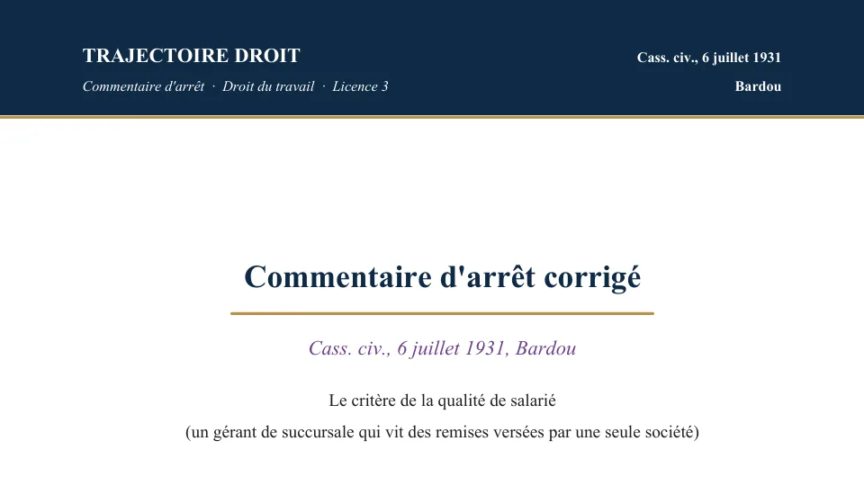

L'arrêt Bardou de 1931, expliqué simplement
Le 6 juillet 1931, la chambre civile de la Cour de cassation juge que la qualité de salarié dépend d'un lien juridique de subordination à la personne qui emploie le travailleur. Un travailleur qui dépend seulement économiquement de cette personne reste donc hors du salariat. Ce critère définit d'ailleurs encore aujourd'hui le contrat de travail.


Commentaire d'arrêt corrigé
Le commentaire de l'arrêt Bardou, rédigé en entier
Le PDF de 12 pages contient le texte intégral de la décision, puis son commentaire rédigé de l'accroche jusqu'à la dernière sous-partie. Le commentaire suit un plan en deux parties, avec d'abord « l'éviction ferme de la dépendance économique », puis « la consécration durable du lien juridique de subordination ». De plus, chaque argument s'appuie sur les arrêts et les articles du cours.
Tu peux aussi recevoir gratuitement le plan détaillé par email.
Paiement Stripe · accès à vie · garantie satisfait ou remboursé sous 7 jours
Le point central de la décision
L'arrêt Bardou a été rendu le 6 juillet 1931 par la chambre civile de la Cour de cassation. À cette date, la chambre sociale n'existait pas encore, car elle n'a été créée qu'en 1938. C'est pourquoi de nombreuses sources citent aujourd'hui cet arrêt, à tort, sous le nom de « Cass. soc. ».
Le litige portait sur un gérant de succursale, c'est-à-dire le responsable d'un magasin d'une chaîne, qui vivait uniquement des remises versées par une société. Aucun lien de subordination n'était pourtant établi avec elle.
La Cour de cassation écarte le critère de la seule dépendance économique. Elle exige à la place un lien juridique de subordination, c'est-à-dire le fait de travailler sous l'autorité d'un employeur qui dirige et surveille le travail du salarié et qui peut le sanctionner.
Bardou fixe le critère sans en détailler le contenu. La Cour de cassation l'a précisé en 1996 avec l'arrêt Société générale. D'après cet arrêt, l'employeur a le pouvoir de donner des ordres et des directives, puis d'en contrôler l'exécution, et enfin de sanctionner les manquements. La Cour a ensuite appliqué ce critère au travail par plateforme numérique avec l'arrêt Uber de 2020.
Commentaire corrigé
Arrêt Bardou
Les faits, le gérant de succursale et l'assurance obligatoire
Bardou dirige, à Toulouse, une succursale de la Société anonyme d'alimentation L'Épargne. Cette société est une société à succursales multiples, c'est-à-dire une chaîne de magasins d'alimentation dont chaque point de vente est confié à un gérant. Le contrat qui lie Bardou à la société lui laisse une grande liberté. Il gère la succursale comme il l'entend et il organise librement son temps, car la société ne le place ni sous sa direction ni sous sa surveillance.
Bardou recrute aussi lui-même le personnel nécessaire au magasin. Il le paie à ses frais et il en répond seul, si bien que les vendeurs de la succursale travaillent pour lui. En revanche, il ne reçoit aucun traitement fixe de la société. Sa rémunération vient uniquement de remises proportionnelles au montant des ventes, donc ses revenus montent quand le magasin vend beaucoup et baissent quand les ventes chutent. Comme tout son revenu vient de la succursale que la société lui confie, Bardou dépend économiquement de L'Épargne.
Le litige naît de la loi du 5 avril 1928 sur les assurances sociales, modifiée par la loi du 30 avril 1930. Son article 1er, paragraphe 2, rend l'assurance obligatoire pour les salariés, ce qui les oblige à cotiser pour être couverts, notamment en cas de maladie et pour leur retraite. Les travailleurs qui ne sont pas salariés au sens de cette loi peuvent seulement s'inscrire comme assurés facultatifs, c'est-à-dire par choix personnel.
L'administration inscrit Bardou d'office, c'est-à-dire sans lui demander son avis, sur la liste des assurés obligatoires. Elle le traite donc comme un salarié de la société L'Épargne. D'après la note de Paul Pic publiée au Dalloz sous l'arrêt, cette inscription suit la lecture large que défend alors le ministère du Travail. Bardou conteste cette inscription, car il estime que son indépendance dans la gestion du magasin l'empêche d'être un salarié. Il demande en même temps à être admis comme assuré facultatif.
La procédure, du tribunal de Toulouse à la Cour de cassation
Bardou porte d'abord sa contestation devant la commission cantonale des assurances sociales, l'organisme local qui examine en premier ce type de contestation. La commission lui donne raison et le radie de la liste des assurés obligatoires.
L'affaire passe ensuite devant le tribunal civil de Toulouse, qui statue le 9 janvier 1931 dans le même sens. Le tribunal examine le contrat de gérance et relève que la convention ne place pas Bardou sous la direction, la surveillance et l'autorité de la société. Il constate aussi que Bardou est indépendant dans sa gestion et qu'il engage lui-même son personnel. De plus, Bardou vit de remises sur les ventes, sans aucun traitement. Il en conclut que ce contrat n'est pas un contrat de louage de services, c'est-à-dire le nom que le Code civil donnait alors au contrat de travail. Bardou n'est donc pas un salarié obligatoirement assujetti, c'est-à-dire obligé de cotiser. Le tribunal confirme alors sa radiation et l'autorise à s'inscrire comme assuré facultatif.
Le préfet de la Haute-Garonne, qui représente l'administration dans ce contentieux, forme alors un pourvoi en cassation contre ce jugement. Ce recours demande à la Cour de cassation de vérifier si les juges ont bien appliqué la loi, sans rejuger les faits. De son côté, Bardou se défend devant la Cour par son avocat, Me Morillot. La chambre civile entend ensuite le rapport du conseiller Beudant et l'avis de l'avocat général Mancel, puis elle rend son arrêt le 6 juillet 1931, après en avoir délibéré en chambre du conseil.
Les arguments des parties, la dépendance économique ou la subordination
Le préfet présente un moyen unique, c'est-à-dire un seul argument juridique contre le jugement. Il s'appuie sur l'article 1er, paragraphe 2, de la loi sur les assurances sociales. Selon lui, le tribunal a eu tort de refuser à Bardou la qualité de salarié au seul motif que son contrat n'est pas un contrat de louage de services. En effet, cette loi exigerait de reconnaître la qualité de salarié à tous les travailleurs économiquement faibles qui se trouvent sous la dépendance économique de la personne qui les emploie. Or Bardou vit des seules remises que lui verse L'Épargne. D'après le préfet, il remplit donc la condition de la loi, et le tribunal a ajouté une exigence que le texte ne contient pas en cherchant s'il existait un contrat de travail.
Le préfet reprend ainsi une lecture large de la loi. En effet, la note de Paul Pic rappelle qu'elle apparaît dès le rapport du député Antonelli du 10 février 1928, pour qui la loi sur les assurances sociales vise des situations économiques plus que des catégories de contrats. Le ministre du Travail la reprend ensuite dans une circulaire du 23 août 1930, qui demande donc de traiter comme salariés tous ceux qui vivent principalement de leur travail et qui dépendent de celui qui les rémunère, qu'ils reçoivent ses ordres ou qu'ils dépendent seulement de lui pour leurs revenus.
L'arrêt ne rapporte pas les arguments présentés pour Bardou par Me Morillot. Sa position se lit toutefois dans le jugement attaqué, qui lui a donné raison. Pour le tribunal de Toulouse, la qualité de salarié dépend du contenu du contrat. Or le contrat de gérance laisse Bardou libre d'organiser son travail et de recruter son personnel, tandis que la société le paie au pourcentage des ventes. Bardou se comporte donc comme le chef de son propre magasin, ce qui exclut un contrat de louage de services. Paul Pic décrit d'ailleurs ce type de gérant comme une sorte de « demi-patron », puisqu'il dirige et paie lui-même ses vendeurs.
Le problème de droit
La chambre civile doit répondre à la question suivante. Pour l'application de la loi sur les assurances sociales, la qualité de salarié se détermine-t-elle par la seule dépendance économique du travailleur envers celui qui le rémunère, ou suppose-t-elle en plus un lien juridique de subordination, c'est-à-dire le fait d'être placé sous la direction, la surveillance et l'autorité de son employeur ?
La solution de la chambre civile
La Cour de cassation rejette le pourvoi du préfet de la Haute-Garonne et confirme le jugement du tribunal civil de Toulouse.
L'attendu de principe
« Mais attendu que la condition juridique d'un travailleur à l'égard de la personne pour laquelle il travaille ne saurait être déterminée par la faiblesse ou la dépendance économique dudit travailleur et ne peut résulter que du contrat conclu entre les parties ; que la qualité de salarié implique nécessairement l'existence d'un lien juridique de subordination du travailleur à la personne qui l'emploie. »Cass., ch. civ., 6 juillet 1931, Bardou
Dans cet attendu, la Cour écarte d'abord expressément le critère économique, car la faiblesse ou la dépendance économique d'un travailleur envers celui qui le rémunère ne détermine jamais, à elle seule, sa qualité juridique. Elle pose ensuite le critère qu'elle retient à sa place, c'est-à-dire l'existence d'un lien juridique de subordination.
La Cour applique ensuite ce principe aux faits de l'affaire. Selon elle, Bardou reste indépendant dans sa gestion et libre de son temps. De plus, il engage à ses frais le personnel de sa succursale, et il est rémunéré seulement par des remises sur ses ventes. Le contrat qui le lie à la société L'Épargne le laisse donc libre de toute autorité de la société.
Faute de lien de subordination, Bardou n'est pas un salarié au sens de la loi sur les assurances sociales, même s'il tire l'essentiel de ses revenus de son activité pour la société L'Épargne.
Pourquoi la Cour de cassation a-t-elle rejeté le critère économique ?
La Cour de cassation choisit la conception classique du salariat, qui fait dépendre la qualité de salarié de l'autorité juridique d'un employeur. En effet, pendant le vote de la loi, deux rapporteurs, c'est-à-dire deux parlementaires chargés d'étudier le texte, la défendaient déjà. Grinda la soutenait à la Chambre des députés, et Chauveau au Sénat. Le ministère du Travail défendait au contraire une lecture plus large.
Le rapporteur Antonelli soutenait cette lecture large, puis une circulaire du 23 août 1930 l'a reprise. Une circulaire est une instruction adressée par le ministre à ses services. Selon cette lecture, la loi sur les assurances sociales protégeait tous les travailleurs économiquement faibles qui vivaient principalement du produit de leur travail, qu'ils soient ou non placés sous l'autorité juridique d'un employeur.
L'arrêt ne cite pas cette circulaire. Paul Pic, qui annote la décision au Dalloz, explique toutefois pourquoi le juge n'avait pas à la suivre. En effet, une circulaire, même appuyée par un avis du Conseil supérieur du travail, ne peut pas modifier une loi, et le juge garde tout son pouvoir pour l'interpréter. Or, selon Pic, aucun article de la loi de 1930 n'abandonne le critère classique de la dépendance juridique.
Ainsi, en retenant la subordination juridique plutôt que la dépendance économique, la Cour de cassation fixe le critère qui va, dans les décennies suivantes, définir le contrat de travail lui-même, bien au-delà du litige d'assurances sociales à l'origine de l'arrêt.
La portée, de Société générale à Uber
Le critère de la subordination juridique posé en 1931 reste, aujourd'hui encore, celui que retient la Cour de cassation pour qualifier un contrat de travail. La jurisprudence l'a seulement précisé, d'abord avec l'arrêt Société générale du 13 novembre 1996.
Cet arrêt dit enfin en quoi consiste ce lien. Selon lui, le lien de subordination se caractérise par l'exécution d'un travail sous l'autorité d'un employeur qui a le pouvoir de donner des ordres et des directives, puis celui d'en contrôler l'exécution, et enfin celui de sanctionner les manquements de son subordonné.
La Cour a ensuite appliqué ce même critère au travail par plateforme numérique, une situation que la chambre civile de 1931 ne pouvait pas imaginer. L'arrêt Uber du 4 mars 2020 juge ainsi qu'un chauffeur connecté à l'application se trouve placé sous la subordination de la plateforme. Pour la Cour, la plateforme fixe seule les tarifs et impose l'itinéraire. Elle contrôle aussi l'acceptation des courses, et elle peut déconnecter le chauffeur qui ne respecte pas assez ses règles.
Près d'un siècle après Bardou, le débat entre dépendance économique et subordination juridique revient donc presque à l'identique, cette fois à propos des plateformes. La Cour de cassation choisit encore la subordination, mais elle l'applique à des indices que la chambre civile de 1931 n'avait pas eu à examiner.
Le lien de subordination posé par Bardou fonde aussi le pouvoir de direction de l'employeur, c'est-à-dire son pouvoir d'imposer des règles dans son entreprise. Par exemple, dans l'arrêt Baby Loup de 2014, la Cour de cassation encadre ce pouvoir quand l'employeur impose une clause de neutralité religieuse à ses salariés.
La critique doctrinale
D'abord, à l'époque, une partie de la doctrine regrette que la chambre civile écarte aussi nettement la dépendance économique. En effet, ce critère, plus large que la subordination juridique, aurait protégé davantage de travailleurs, notamment les gérants de succursale et les représentants de commerce qui vivent d'un seul donneur d'ordre sans être pour autant dirigés au jour le jour dans leur travail. En retenant un critère plus étroit, la Cour de cassation laisse donc ces travailleurs hors du droit du travail naissant, même quand leur situation économique réelle ressemble à celle d'un salarié.
Ensuite, la même critique revient aujourd'hui avec le travail par plateforme. Le critère de la subordination juridique a été pensé pour des rapports de travail classiques, par exemple dans un atelier, un magasin ou un bureau. Il s'applique donc mal à un travailleur juridiquement indépendant, qui ne reçoit les ordres d'aucun chef, alors qu'un algorithme fixe ses conditions de travail et qu'il en dépend pour vivre.
L'arrêt Uber de 2020 répond à cette difficulté en élargissant les indices de subordination retenus. Le débat reste pourtant ouvert pour d'autres plateformes, car la qualification y dépend toujours d'un examen des conditions réelles de travail.
Comment utiliser l'arrêt Bardou dans une copie
Dans une dissertation sur la qualification du contrat de travail ou sur les nouvelles formes de travail, tu commences par Bardou, car il fait naître le critère de subordination. Tu expliques ensuite comment l'arrêt Société générale l'a précisé et comment l'arrêt Uber l'a appliqué au travail par plateforme. La méthode complète se trouve sur ma page sur la dissertation juridique.
Dans un cas pratique où il faut qualifier une relation de travail, tu reprends les trois pouvoirs qui, selon l'arrêt Société générale, caractérisent l'employeur. L'employeur peut d'abord donner des ordres, puis en contrôler l'exécution. Il peut enfin sanctionner les manquements. Tu vérifies ensuite chacun de ces pouvoirs sur les faits de l'énoncé. En revanche, d'après Bardou, la dépendance économique d'une personne envers celle qui la rémunère ne suffit jamais, même quand elle est très forte.
Dans un commentaire d'arrêt sur Bardou lui-même, tu t'appuies sur l'ordre de l'attendu. La Cour y rejette d'abord expressément le critère économique, puis elle formule le critère juridique.
Tu trouveras la méthode complète dans mes pages sur le commentaire d'arrêt et sur la fiche d'arrêt. Ma fiche de droit du travail L3 replace enfin ce critère dans le reste du programme.
Les erreurs à éviter avec l'arrêt Bardou
- Chambre civile ou chambre sociale. La chambre sociale est créée seulement en 1938, donc elle n'existe pas encore en 1931. Tu cites Bardou comme un arrêt de la chambre civile (Cass., ch. civ.).
- Rejet ou cassation. La Cour de cassation rejette le pourvoi du préfet de la Haute-Garonne. Elle confirme donc le jugement du tribunal civil de Toulouse, déjà favorable à Bardou.
- Les parties au procès. Le litige oppose l'administration des assurances sociales, représentée par le préfet, à un gérant de succursale. Ce gérant conteste son assujettissement, c'est-à-dire son inscription obligatoire aux assurances sociales.
- Le rôle actuel de la dépendance économique. Elle ne suffit jamais, seule, à caractériser un contrat de travail. Dans l'arrêt Uber, la Cour fonde d'ailleurs la subordination sur les pouvoirs de la plateforme, qui fixe les tarifs et l'itinéraire et qui peut déconnecter le chauffeur.